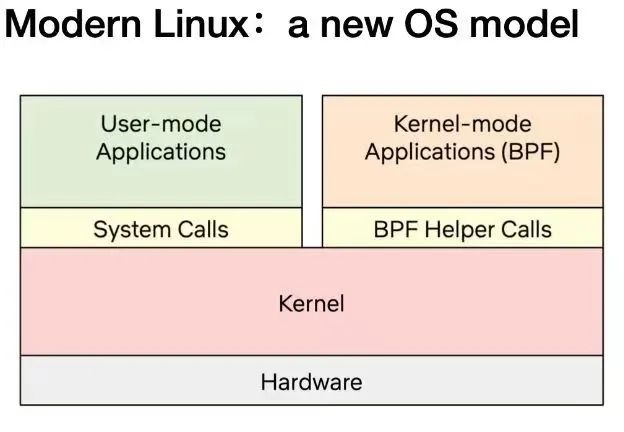
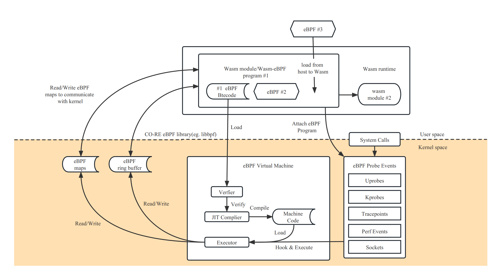

Wasm-bpf: 架起 Webassembly 和 eBPF 內核可編程的橋樑
作者：鄭昱笙，陳茂林
Wasm 最初是以瀏覽器安全沙盒為目的開發的，發展到目前為止，WebAssembly 已經成為一個用於雲原生軟件組件的高性能、跨平臺和多語言軟件沙箱環境，Wasm 輕量級容器也非常適合作為下一代無服務器平臺運行時。另一個令人興奮的趨勢是 eBPF 的興起，它使雲原生開發人員能夠構建安全的網絡、服務網格和多種可觀測性組件，並且它也在逐步滲透和深入到內核的各個組件，提供更強大的內核態可編程交互能力。
Wasm-bpf 是一個全新的開源項目[1]，它定義了一套 eBPF 相關係統接口的抽象，並提供了一套對應的開發工具鏈、庫以及通用的 Wasm + eBPF 運行時平臺實例，讓任意 Wasm 虛擬機或者 Wasm 輕量級容器中的應用，有能力將使用場景下沉和拓展到內核態，獲取內核態和用戶態的幾乎所有數據，在網絡、安全等多個方面實現對整個操作系統層面的可編程控制，從而極大的拓展 WebAssembly 生態在非瀏覽器端的應用場景。
基於 eBPF 的系統接口，為雲原生 WebAssembly 帶來更多可能
Wasm & WASI
也許你也已經看過 Solomon Hykes (Docker的創始人之一)這句話：
如果在2008年已經有了 Wasm + WASI，我們根本不需要創建 Docker。 Wasm 就有這麼重要。 服務端的 WebAssembly 是計算的未來。
2022 年，WebAssembly（通常縮寫為 Wasm）成為了焦點：新的 Wasm 初創企業出現，老牌公司宣佈支持 Wasm，Bytecode Alliance 發佈了許多 Wasm 標準，Cloud Native Computing Foundation 舉辦了兩次 WasmDay 活動，而其中最大的 Wasm 用戶之一 Figma 被 Adobe 以驚人的 200 億美元的價格收購[2]。
Wasm 是一種二進制格式。許多不同的語言都可以編譯為相同的格式，並且該二進制格式可以在大量操作系統和體系結構上運行。Java 和 .NET 在這方面也很相似，但是 Wasm 有一個重要的區別：Wasm 運行時不信任執行的二進制文件。Wasm 應用程序被隔離在沙盒中，只能訪問用戶明確允許的資源（如文件或環境變量）。Wasm 還有許多其他理想的特性（例如非常出色的性能），但正是它的安全模型使 Wasm 在廣泛的環境中使用，從瀏覽器到邊緣和 IoT，甚至到雲端[3]。
因為無法依賴瀏覽器中現有可用的 JavaScript 引擎接口，所以目前大多數在瀏覽器外運行的 Wasm 輕量級容器需要使用 WASI（WebAssembly 系統接口）。這些運行時允許 Wasm 應用程序以與 POSIX 類似（但不完全相同）的方式與其 host 操作系統交互。
但是，相對於傳統的容器中可以使用幾乎所有的系統調用，目前 WASI 所能提供的系統資源非常有限，目前僅僅在文件系統、socket 網絡連接等方面提供了一些基本的支持，對於操作系統底層資源的訪問、控制和管理能力仍然存在大量空白，例如對 Wasm 模塊或者外部其他進程的執行資源限制與行為觀測，對網絡包的快速轉發和處理，甚至和 wasm 沙箱外的其他進程進行通信，訪問外設等，都沒有一個比較成熟的解決方案。這也使得大多數的 Wasm 輕量級容器在實際應用中還是主要集中於純粹的計算密集型應用，而在網絡、安全等方面，還是需要依賴於傳統的容器技術。
這也是我們希望建立 Wasm-bpf 項目的初衷：藉助當前內核態 eBPF 提供的系統接口以及和用戶態交互的能力，拓展整個 WASI 的生態藍圖，為 Wasm 應用帶來更多可能的使用場景，同時也能在用戶態增強 eBPF 程序的能力。
或者換句話說，類似於瀏覽器中運行的 Wasm 程序，可以通過 JavaScript 引擎接口訪問瀏覽器提供的各種系統資源，Wasm-bpf 的方案就是藉助 eBPF 虛擬機接口訪問操作系統的各類資源；得益於 eBPF 目前在 Linux 內核甚至 Windows 等其他操作系統中的廣泛支持，以及不同內核版本和架構之間的可移植性，和內核 BPF 驗證引擎的可靠性，我們仍然可以在一定程度上保證應用的可移植性和安全邊界。
Wasm-bpf：超輕量級 Wasm + eBPF 通用運行時平臺
Wasm-bpf 項目已經實現了內核態 eBPF 虛擬機和用戶態之間系統接口完整的抽象機制，並提供了對應的工具鏈以將 eBPF 應用編譯為 Wasm 模塊，幫助進行內核態 eBPF 和用戶態 Wasm 之間無序列化，共享內存的高效雙向通信，並通過代碼生成技術，提供和其他用戶態 eBPF 開發框架幾乎一致的、簡單便捷的開發體驗。藉助 Wasm 組件模型不斷完善的生態支持，我們也可以為 eBPF 社區帶來更多用戶態開發語言，不同語言實現的可觀測性、網絡等 eBPF 應用和數據處理插件也可以被輕鬆集成、複用、統一管理。
在幾乎已經成為 eBPF 用戶態事實上的 API 標準的 libbpf 庫，和 WAMR(wasm-micro-runtime) 之上，只需要 300+ 行代碼即可構建完整的通用 Wasm-eBPF 運行組件，並支持大多數的 eBPF 使用場景 -- 任何人用任何主流 Wasm 運行時，或者任何 eBPF 用戶態庫，以及任何編程語言，都可以輕鬆添加對應的虛擬機支持，並複用我們的工具鏈輕鬆實現 Wasm-eBPF 程序的編寫和開發。
之前在 eunomia-bpf 項目中，已經有一些將 eBPF 和 Wasm 結合的探索[4]，但它並不是為了 Wasm 原生應用和輕量級容器的場景設計的，不符合 Wasm-eBPF 的通用編程模型，只是將 Wasm 作為數據處理插件，性能也較為低下。因此我們創建了一個新的開源倉庫，讓 Wasm-bpf 項目專注於利用 eBPF 增強和擴展 WebAssembly 使用場景，並進一步完善對應的工具鏈和開發庫支持：https://github.com/eunomia-bpf/wasm-bpf 。反過來，一個通用的 Wasm-eBPF 開發框架，藉助 Wasm 相關的生態也可以為 eBPF 相關社區在用戶態的進一步深入拓展，提供更多的可能性。
eBPF：安全和有效地擴展內核
eBPF 是一項革命性的技術，起源於 Linux 內核，可以在操作系統的內核中運行沙盒程序。它被用來安全和有效地擴展內核的功能，而不需要改變內核的源代碼或加載內核模塊。eBPF 通過允許在操作系統內運行沙盒程序，應用程序開發人員可以在運行時，可編程地向操作系統動態添加額外的功能。然後，操作系統保證安全和執行效率，就像在即時編譯（JIT）編譯器和驗證引擎的幫助下進行本地編譯一樣。eBPF 程序在內核版本之間是可移植的，並且可以自動更新，從而避免了工作負載中斷和節點重啟。
今天，eBPF被廣泛用於各類場景：在現代數據中心和雲原生環境中，可以提供高性能的網絡包處理和負載均衡；以非常低的資源開銷，做到對多種細粒度指標的可觀測性，幫助應用程序開發人員跟蹤應用程序，為性能故障排除提供洞察力；保障應用程序和容器運行時的安全執行，等等。可能性是無窮的，而 eBPF 在操作系統內核中所釋放的創新才剛剛開始[3]。
eBPF 的未來：內核的 JavaScript 可編程接口
對於瀏覽器而言，JavaScript 的引入帶來的可編程性開啟了一場巨大的革命，使瀏覽器發展成為幾乎獨立的操作系統。現在讓我們回到 eBPF：為了理解 eBPF 對 Linux 內核的可編程性影響，對 Linux 內核的結構以及它如何與應用程序和硬件進行交互有一個高層次的理解是有幫助的[4]。

Linux 內核的主要目的是抽象出硬件或虛擬硬件，並提供一個一致的API（系統調用），允許應用程序運行和共享資源。為了實現這個目的，我們維護了一系列子系統和層，以分配這些責任[5]。每個子系統通常允許某種程度的配置，以考慮到用戶的不同需求。如果不能配置所需的行為，就需要改變內核，從歷史上看，改變內核的行為，或者讓用戶編寫的程序能夠在內核中運行，就有兩種選擇:
| 本地支持內核模塊 | 寫一個內核模塊 |
|---|---|
| 改變內核源代碼，並說服Linux內核社區相信這種改變是必要的。等待幾年，讓新的內核版本成為一種商品。 | 定期修復它，因為每個內核版本都可能破壞它。由於缺乏安全邊界，冒著破壞你的Linux內核的風險 |
實際上，兩種方案都不常用，前者成本太高，後者則幾乎沒有可移植性。
有了 eBPF，就有了一個新的選擇，可以重新編程 Linux 內核的行為，而不需要改變內核的源代碼或加載內核模塊，同時保證在不同內核版本之間一定程度上的行為一致性和兼容性、以及安全性[6]。為了實現這個目的，eBPF 程序也需要有一套對應的 API，允許用戶定義的應用程序運行和共享資源 --- 換句話說，某種意義上講 eBPF 虛擬機也提供了一套類似於系統調用的機制，藉助 eBPF 和用戶態通信的機制，Wasm 虛擬機和用戶態應用也可以獲得這套“系統調用”的完整使用權，一方面能可編程地擴展傳統的系統調用的能力，另一方面能在網絡、文件系統等許多層次實現更高效的可編程 IO 處理。

正如上圖所示，當今的 Linux 內核正在向一個新的內核模型演化：用戶定義的應用程序可以在內核態和用戶態同時執行，用戶態通過傳統的系統調用訪問系統資源，內核態則通過 BPF Helper Calls 和系統的各個部分完成交互。截止 2023 年初，內核中的 eBPF 虛擬機中已經有 220 多個Helper 系統接口，涵蓋了非常多的應用場景。
值得注意的是，BPF Helper Call 和系統調用二者並不是競爭關係，它們的編程模型和有性能優勢的場景完全不同，也不會完全替代對方。對 Wasm 和 Wasi 相關生態來說，情況也類似，專門設計的 wasi 接口需要經歷一個漫長的標準化過程，但可能在特定場景能為用戶態應用獲取更佳的性能和可移植性保證，而 eBPF 在保證沙箱本質和可移植性的前提下，可以提供一個快速靈活的擴展系統接口的方案。
目前的 eBPF 仍然處於早期階段，但是藉助當前 eBPF 提供的內核接口和用戶態交互的能力，經由 Wasm-bpf 的系統接口轉換，Wasm 虛擬機中的應用已經幾乎有能力獲取內核以及用戶態任意一個函數調用的數據和返回值（kprobe，uprobe...）；以很低的代價收集和理解所有系統調用，並獲取所有網絡操作的數據包和套接字級別的數據（tracepoint，socket...）；在網絡包處理解決方案中添加額外的協議分析器，並輕鬆地編程任何轉發邏輯（XDP，TC...），以滿足不斷變化的需求，而無需離開Linux內核的數據包處理環境。
不僅如此，eBPF 還有能力往用戶空間任意進程的任意地址寫入數據（bpf_probe_write_user[7]），有限度地修改內核函數的返回值（bpf_override_return[8]），甚至在內核態直接執行某些系統調用[9]；所幸的是，eBPF 在加載進內核之前對字節碼會進行嚴格的安全檢查，確保沒有內存越界等操作，同時，許多可能會擴大攻擊面、帶來安全風險的功能都是需要在編譯內核時明確選擇啟用才能使用的；在 Wasm 虛擬機將字節碼加載進內核之前，也可以明確選擇啟用或者禁用某些 eBPF 功能，以確保沙箱的安全性。
所有的這些場景都不需要離開 Wasm 輕量級容器：不像傳統的使用 Wasm 作為數據處理或者控制插件的應用中，這些步驟由 Wasm 虛擬機外的邏輯實現，現在可以在 Wasm 輕量級容器中實現對 eBPF 以及 eBPF 能訪問的幾乎所有系統資源，完整的控制和交互，甚至實時生成 eBPF 代碼改變內核的行為邏輯，實現整個系統從用戶態擴展到內核態的可編程性。
Wasm 對 eBPF 的用戶態增強：組件模型
標準很少是一個生態系統中最令人興奮的部分。而且，隨著 “組件模型” 這樣的名字，激起興奮感確實是一項艱鉅的任務。但是，在這個乏味的名字背後是 Wasm 為軟件世界帶來的最重要的創新。
組件模型描述了 Wasm 二進制文件之間如何交互的方式。更具體地說，兩個組件可以告訴對方它們提供的服務以及需要履行的期望。然後，Wasm 模塊可以利用彼此的能力。這為軟件開發人員提供了一種新的建立應用程序的方式。開發人員可以聲明應用程序所需的組件（或者更抽象地說，應用程序所需的功能），然後 Wasm 運行時可以代表用戶組裝正確的組件集合。組件模型正在迅速成熟，已經出現了參考實現。2023 年將是組件模型開始重新定義我們如何編寫軟件的一年[10]。
藉助 Wasm 的相關生態，尤其是基於 Wasm 的輕量級容器技術、組件模型，我們同樣也可以給 eBPF 的應用賦予如下特性：
可移植：讓 eBPF 工具和應用完全平臺無關、可移植，不需要進行重新編譯即可以跨平臺分發；隔離性：藉助 Wasm 的可靠性和隔離性，讓 eBPF 程序的加載和執行、以及用戶態的數據處理流程更加安全可靠；事實上一個 eBPF 應用的用戶態控制代碼、數據處理代碼的部分通常遠遠多於內核態；包管理：藉助 Wasm 的生態和工具鏈，完成 eBPF 程序或工具的分發、管理、加載等工作，目前 eBPF 程序或工具生態也缺乏一個通用的包管理或插件管理系統；跨語言：目前 eBPF 程序由多種用戶態語言開發（如 Go\Rust\C\C++\Python 等），超過 30 種編程語言可以被編譯成 WebAssembly 模塊，可以允許各種背景的開發人員（C、Go、Rust、Java、TypeScript 等）用他們選擇的語言編寫 eBPF 的用戶態程序，而不需要學習新的語言，甚至我們可以將 Wasm 動態翻譯為 eBPF 程序，加載進入內核，或者在 Wasm 輕量級容器中直接生成 eBPF 字節碼；敏捷性：對於大型的 eBPF 應用程序，可以使用 Wasm 作為插件擴展平臺：擴展程序可以在運行時直接從控制平面交付和重新加載。這不僅意味著每個人都可以使用官方和未經修改的應用程序來加載自定義擴展，而且任何 eBPF 程序的錯誤修復和/或更新都可以在運行時推送和/或測試，而不需要更新和/或重新部署一個新的二進制；對於可觀測性應用來說，需要更新數據處理插件，也無需經歷重新編譯部署整個應用程序的過程；輕量級：WebAssembly 微服務消耗 1% 的資源，與 Linux 容器應用相比，冷啟動的時間是 1%；對於大量的小型 eBPF 程序需要快速部署和停止的場景，Wasm 的輕量級特性可以大大降低系統的資源開銷。
我們已經在 LMP 項目的 eBPF Hub 中，有一些創建符合 OCI 標準的 Wasm-eBPF 應用程序，並利用 ORAS 簡化擴展 eBPF 應用開發，分發、加載、運行能力的嘗試[11]，以及基於 Wasm 同時使用多種不同語言開發 eBPF 的用戶態數據處理插件的實踐，基於最新的 Wasm-bpf 框架，有更多的探索性工作可以繼續展開。
用戶空間和 eBPF 程序的交互流程
eBPF 程序是以函數為單位的、事件驅動的，當內核或用戶空間應用程序通過某個 hook 點時就會運行特定的 eBPF 程序。要使用一個 eBPF 程序，首先我們需要使用 clang/LLVM 工具鏈將對應的源代碼編譯為 bpf 字節碼，其中包含對應的數據結構定義、maps 和 progs 定義，progs 即程序段，maps 可以用來存儲數據或者和用戶空間實現雙向通信。之後，我們可以藉助用戶態的開發框架和加載框架，實現完整的 eBPF 應用。
通常的用戶態 eBPF 開發框架
對於一個完整的 eBPF 應用，通常需要包含用戶態和內核態兩部分：
- 用戶態程序需要通過一系列系統調用跟內核進行交互（主要是 bpf 系統調用），創建對應的 map 以在內核態保存數據或和用戶態通信，根據配置動態選擇加載不同的程序段，動態修改字節碼或配置 eBPF 程序的參數，將對應的字節碼信息加載進內核，通過驗證器確保安全性，並通過 maps 和內核之間實現雙向通信，通過 ring buffer / perf buffer 之類的機制從內核態向用戶態傳遞數據（或者反之）。
- 內核態主要負責具體的計算邏輯與數據收集。

在用戶態 Wasm-eBPF 系統接口之上定義的全新 eBPF 開發框架
這個項目本質上可以說是希望把 Wasm 沙箱當做在操作系統之上建立的另一個用戶態運行空間，讓 Wasm 應用在沙箱中實現和通常用戶態中運行的 eBPF 應用一樣的編程模型和執行邏輯。Wasm-bpf 會需要一個在 host（沙箱外部）構建的運行時擴展，以及一些在沙箱內部被編譯為 Wasm 字節碼的運行時庫來提供完整的支持。

要實現完備的開發模型，我們需要：
- 一個 Wasm 模塊可以對應多個 eBPF 程序；
- 一個 eBPF 程序實例也可以被多個 Wasm 模塊所共用；
- 可以將 eBPF 程序從 Wasm 沙箱中動態加載進內核、選擇所需的掛載點掛載、卸載，控制多個 eBPF 字節碼對象的完整生命週期，並支持大多數的 eBPF 程序類型；
- 可以通過多種類型的 Maps 和內核雙向通信，支持大多數的 Maps 類型；
- 通過 ring buffer 和 perf event polling 從內核態向用戶態高效發送信息（對於 ring buffer 來說，也可以反之）；
- 幾乎可以適配於所有的使用 eBPF 程序的應用場景，並可以隨著內核功能的添加不斷演化和擴展，同時不需要變動 Wasm 虛擬機的系統接口。
這就是目前 Wasm-bpf 項目所做的工作。我們也提出了一個新的 WASI 的 Proposal: WASI-eBPF[12].
在 Wasm-bpf 項目中，所有 Wasm 和 eBPF 虛擬機之間的通信都無需經過序列化、反序列化機制，通過工具鏈中代碼生成技術和 BTF（BPF 類型格式[13]）信息的支持，我們可以實現在 eBPF 和 Wasm 之間可能不同的結構體內存佈局、不同的大小端機制、不同的指針寬度之間的正確通信，在運行時幾乎不會引入任何額外的開銷；通過 eBPF Maps 通信的時候數據可以直接由內核態複製到 Wasm 虛擬機的內存中，避免多次拷貝帶來的額外損耗。同時，通過自動生成 skeleton （bpf 代碼框架）和類型定義的方式，用戶態程序的 eBPF-Wasm 開發體驗也得到了非常大的改善。
得益於 libbpf 提供的 CO-RE（Compile-Once, Run Everywhere）技術，在不同內核版本之間移植 eBPF 字節碼對象，也不需要引入額外的重新編譯流程，運行時也沒有任何的 LLVM/Clang 依賴[14]。
通常，一個編譯好的 eBPF-Wasm 模塊只有大約 90Kb，在不到 100ms 內即可以完成動態加載進內核並執行的過程。我們也在倉庫中提供了幾個例子，分別對應於可觀測、網絡、安全等多種場景，使用 C/C++ 語言或 Rust 語言編寫。
感謝華南理工大學賴曉錚副教授、西安郵電大學陳莉君教授團隊和達坦科技王璞、施繼成老師對 Wasm 和 eBPF 相結合的指導與幫助，在接下來的工作中，我們會和參加 2023 開源畢設之旅的同學們一同針對一些 Wasm-bpf 具體的應用場景，進行更深入的研究與探討，並在下一篇 blog 中給出更詳細的原理解析與性能分析，以及對應的一些代碼示例。
Wasm-bpf 編譯工具鏈與運行時模塊等目前由龍蜥社區 eBPF 技術探索 SIG[15] 中孵化的 eunomia-bpf 開源社區[16]開發與維護，感謝中科院軟件所 PLCT 實驗室對社區的大力支持和資助，感謝社區同伴們的貢獻。接下來，我們也會在對應的 eBPF 和 Wasm 相關的工具鏈和運行時方面，進行更多的完善和探索，並積極向上遊社區反饋和貢獻。
參考資料
- [1] wasm-bpf Github 開源地址：https://github.com/eunomia-bpf/wasm-bpf
- [2] WebAssembly：無需容器的 Docker：https://zhuanlan.zhihu.com/p/595257541
- [3] 雲原生項目可擴展性的利器 WebAssembly 簡介 https://mp.weixin.qq.com/s/fap0bl6GFGi8zN5BFLpkCw
- [4] 當 Wasm 遇見 eBPF ：使用 WebAssembly 編寫、分發、加載運行 eBPF 程序：https://zhuanlan.zhihu.com/p/573941739
- [5] https://ebpf.io/
- [6] 什麼是 eBPF：https://ebpf.io/what-is-ebpf
- [7] Offensive BPF: Understanding and using bpf_probe_write_user https://embracethered.com/blog/posts/2021/offensive-bpf-libbpf-bpf_probe_write_user/
- [8] 雲原生安全攻防｜使用eBPF逃逸容器技術分析與實踐：https://security.tencent.com/index.php/blog/msg/206
- [9] kernel-versions.md: https://github.com/iovisor/bcc/blob/master/docs/kernel-versions.md
- [10] 2023 年 WebAssembly 技術五大趨勢預測：https://zhuanlan.zhihu.com/p/597705400
- [11] LMP eBPF-Hub: https://github.com/linuxkerneltravel/lmp
- [12] WASI-eBPF: https://github.com/WebAssembly/WASI/issues/513
- [13] BPF BTF 詳解：https://www.ebpf.top/post/kernel_btf/
- [14] BPF 可移植性和 CO-RE（一次編譯，到處運行）：https://cloud.tencent.com/developer/article/1802154
- [15] 龍蜥社區 eBPF 技術探索 SIG https://openanolis.cn/sig/ebpfresearch
- [16] eunomia-bpf 項目：https://github.com/eunomia-bpf/eunomia-bpf
- [17] eunomia-bpf 項目龍蜥 Gitee 鏡像：https://gitee.com/anolis/eunomia